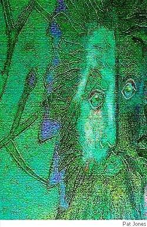

Peter Branson
The Green Man
“What means these ridiculous monstrosities in the court of cloisters?”
— St Bernard of Clairvaux, 1125
“The symbols are ingrained in the psyche... and have not changed since the dawn of human existence.”
— G. R. Varner
Shaped from heart wood, hard stone, no figment, flesh
and blood transformed by low-born artisans,
these fiendishly-depraved eyesores, symbols
employed to decorate high corbel, font,
roof boss, bench end and startled misericorde,
kept fussy church officials ignorant
of what they represent, the living sap
within the gnarled dark root, those furtive eyes
above old chapel doors, the dancing men
and stag-horns peeping out from altar screens.
Jack in the Green’s abroad. No begging game
by lean black chimney sweeps in garish clothes
led by a hobby horse, wild kettle drums,
whistles and frying pans, this one’s for real.
D’you understand? There’s something present here,
an energy, the spirit dormant in
each cell of plants we eat and flowers we smell,
the air we breathe. These days George Green’s afraid
we lack the cunning to sustain, the time
for trees to beat retreat, habituate.

Into the Jaws of Death
“Someone had blunder’d”
— Tennyson: “The Charge of the Light Brigade”
Parade of faces, broadsheet wise, all spent:
Gibraltar Forward Operations Base,
Afghanistan, 2 Para,last week’s news.
As liable to be killed or maimed as in
the First World War, you chase the Taliban
through corn high as an elephant’s eye, point-blank:
pure comic book, like rabbits in headlines.
It's called “The Mouth of Hell”: the constant threat
of skirmish, mortar, sniper, mine, vest bomb;
phone pictures for the blokes back home — “Respect!”
No wonders why or truck with politics,
the recipe: take youthful fervour, add
close comradeship, fall pride (“No holding back”),
incessant drill, adrenalin; stir well.
No pause for air cover, boots melting in
the sun, hit them head on: “They choose the ground.
No sweat, we charge straight through their ambushes.”
June 12th, you’re tossing sweets to kids who laugh
and point beyond the track across a stream.
You take a look. They open up, sheer weight
of fire indelible: “Hard rock ’n’ roll.”
“Man down!” You’re hot as blazes till that first
shot’s fired, then cold as ice: slow — quick, quick — slow,
weird time. Word’s out two more have done and died.
Collateral Damages
1.
When mums wheel kids to see the animals,
you are surprised: not one’s put out, by cows,
eyes concrete-mixers; sheep, hapless shipwrecks.
Days past, at hiring fairs, house servant, stock-
man, shepherd, teamster, field-worker, milkmaid,
flogged off time-place in chunks just to survive.
They say, way back, people were traded here,
freely, at market rate, like these poor beasts,
confirmed by custom, blessed by church and state.
2.
This is a battlefield, laid-out, with ups
and downs, in four dimensions, further than
the eye can see; towards infinity.
What will they think a century from now?
We kill and maim yet mostly put it down
to fate. Nobody blinks; no one’s to blame.
War of attrition: don’t know when or where
next strike will be, who’ll pay the price. Flower shrines,
like henges, mourn each fresh blood sacrifice.
No handicaps are given out for weight
or size, the biggest monsters trading blows
with smallest cars, mopeds and peddle bikes.
Peter Branson is a creative writing tutor. Until recently he was Writer-in-residence for “All Write” run by Stoke-on-Trent Library Services. He began writing poetry seriously about five years ago and has had work published by many mainstream poetry journals, including Acumen, Ambit, Envoi, Iota, 14, Fire, The Interpreter’s House, Poetry Nottingham, Red Ink and Other Poetry. In the last two years he has had success in several competitions including a first prize in The Envoi International, a second place in The Writing Magazine Open and a highly-commended in The Petra Kenney. His first collection, “The Accidental Tourist”, was published in May 2008.
|